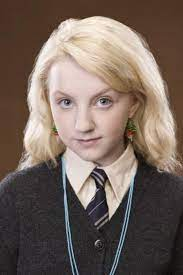
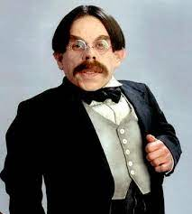
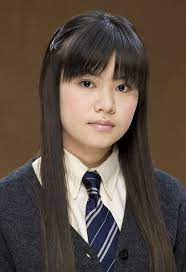

Corvinal é uma das quatro casas da Escola de Magia e Bruxaria de Hogwarts, no universo de Harry Potter criado por J.K. Rowling. A casa é conhecida por valorizar características como inteligência, criatividade, sabedoria e curiosidade. Fundada por Rowena Ravenclaw, Corvinal é notável por admitir alunos que demonstram essas qualidades, muitas vezes selecionados através do Chapéu Seletor. Suas cores são o azul e o bronze, e seu animal símbolo é a águia. Os alunos da Corvinal são frequentemente vistos como acadêmicos e inquisitivos, valorizando o conhecimento e a busca pela verdade. Alguns dos personagens notáveis da Corvinal incluem Luna Lovegood e Filius Flitwick. A casa é representada pelo fantasma da Dama Cinzenta e é liderada pelo Professor Flitwick. Embora os membros da Corvinal possam ser considerados introvertidos e reservados em comparação com outras casas, eles são apreciados por sua perspicácia e raciocínio lógico. A rivalidade entre Corvinal e Sonserina é menos proeminente do que a rivalidade entre Grifinória e Sonserina, refletindo a natureza mais pacífica e intelectual da casa. Em resumo, Corvinal é retratada como uma casa de estudiosos e pensadores, cujos membros são apreciados por sua inteligência e criatividade.

Luna Lovegood
Luna é uma das personagens mais distintas da série Harry Potter. Ela é conhecida por sua excentricidade, sua perspectiva única sobre o mundo e sua mente criativa. Luna é uma grande defensora das criaturas mágicas e das teorias mais incomuns, o que a torna alvo de zombaria por parte de outros alunos. No entanto, sua coragem, bondade e lealdade a tornam uma amiga valorosa para Harry e seus amigos, e ela desempenha um papel significativo na resistência contra Voldemort e seus seguidores.

Filius Flitwick
Flitwick é um professor de Feitiços e o diretor da casa Corvinal em Hogwarts. Ele é um bruxo talentoso e respeitado, conhecido por sua habilidade em ensinar magia e por sua gentileza com os alunos. Flitwick é uma presença constante ao longo da série, oferecendo orientação e apoio aos alunos da Corvinal, bem como aos outros estudantes de Hogwarts.

Cho Chang
Cho é uma bruxa da Corvinal que se destaca como jogadora de quadribol e interesse amoroso de Harry Potter. Ela é uma pessoa inteligente e sensível, embora também tenha lutado com o trauma e o luto após a morte de Cedrico Diggory, seu namorado anterior, durante o Torneio Tribruxo. Cho é retratada como uma pessoa gentil e amigável, e embora seu relacionamento com Harry tenha sido breve, ela continua sendo uma figura importante em sua vida.